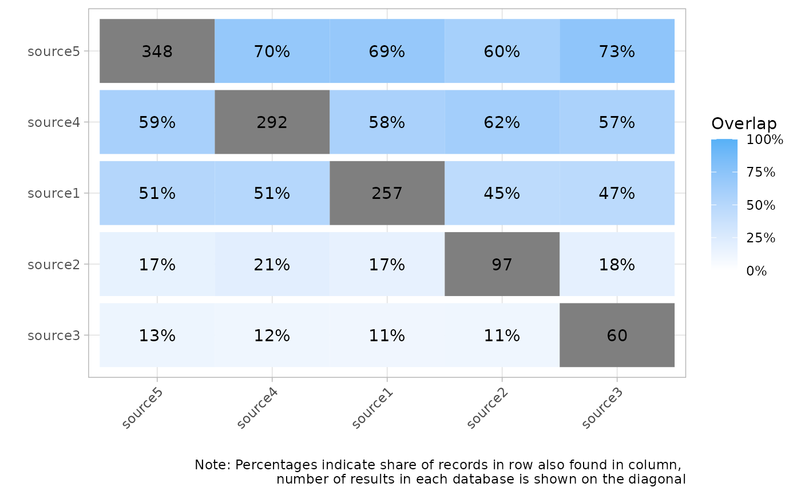
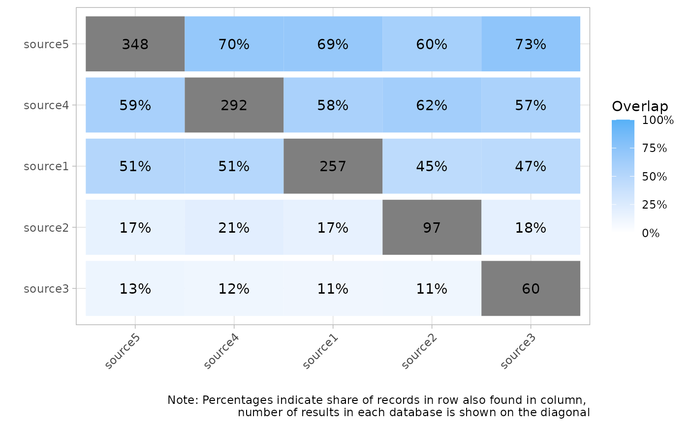

Create a heatmap matrix showing the overlap between sources
Source:R/plots.R
plot_source_overlap_heatmap.RdShow overlap between different record sources, either by showing the number or the percentages of shared records between any pair of sources.
Usage
plot_source_overlap_heatmap(
data,
cells = "source",
facets = NULL,
plot_type = c("counts", "percentages"),
sort_sources = TRUE,
interactive = FALSE
)Arguments
- data
A tibble with one record per row, an id column and then one column per source indicating whether the record was found in that source (usually obtained from
compare_sources())- cells
Variable to display in the cells. Should be 'source', 'label' or 'string'
- facets
Variable in data used for facets (i.e. sub-plots). Should be NULL, 'source', 'label' or 'string'
- plot_type
Either
counts(number of shared records) orpercentages(share of overlapping records).- sort_sources
Should sources be shown based on the number of records they contained? If FALSE, order of data is retained.
- interactive
Should returned plot be interactive and enable user to export records underlying each field?
Value
The requested plot as a either a ggplot2 object (when interactive = FALSE), which can then be
further formatted or saved using ggplot2::ggsave(), or a plotly object when interactive = TRUE
Examples
data <- data.frame(
article_id = 1:500,
source__source1 = rbinom(500, 1, .5) == 1,
source__source2 = rbinom(500, 1, .2) == 1,
source__source3 = rbinom(500, 1, .1) == 1,
source__source4 = rbinom(500, 1, .6) == 1,
source__source5 = rbinom(500, 1, .7) == 1
)
plot_source_overlap_heatmap(data)
 plot_source_overlap_heatmap(data, plot_type = "percentages")

plot_source_overlap_heatmap(data, plot_type = "percentages")
